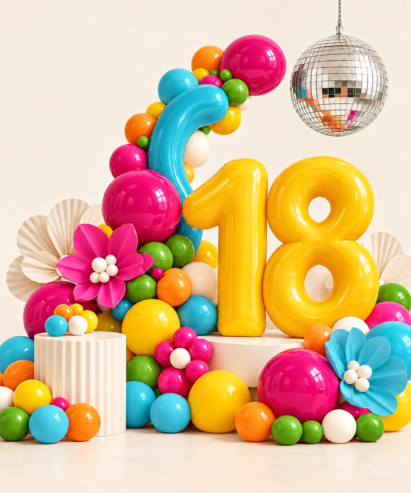
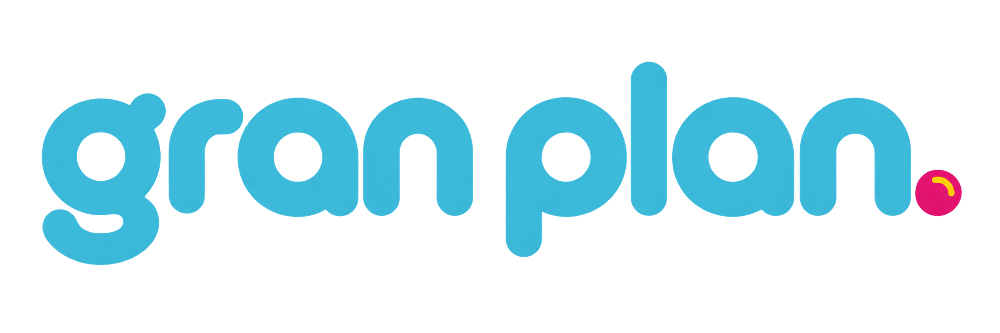
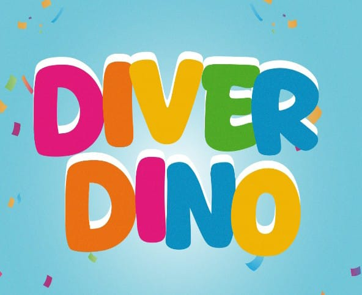
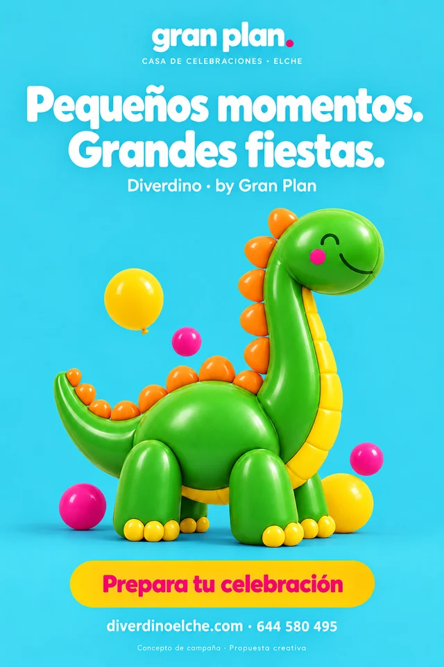
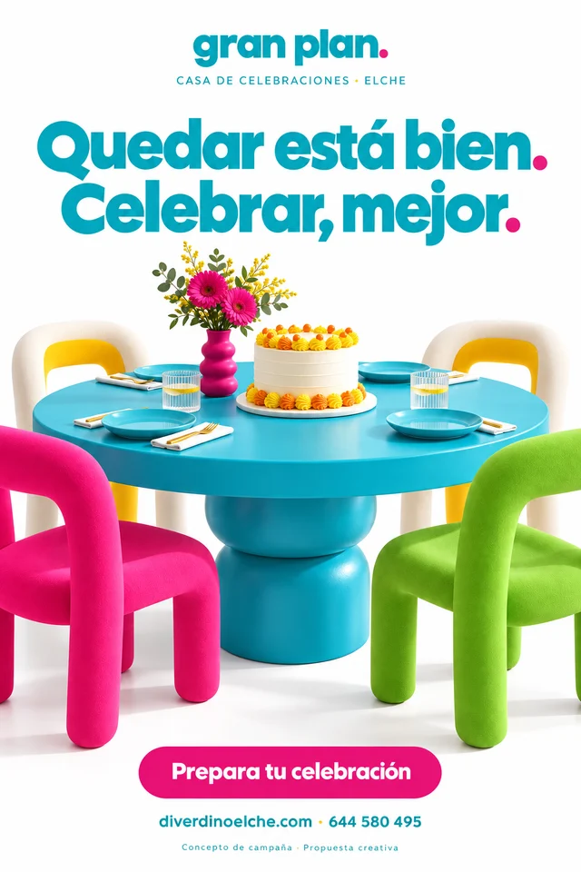

Su cumple.
Tu tranquilidad.
Una franja de alquiler, equipamiento confirmado y una guía sencilla para preparar la celebración.
Supervisión, capacidad y uso del parque por concretar en condiciones.De un cumpleaños a una cena pendiente. Una nueva casa para todas las formas de juntarse en Elche.
Una estrategia que une marca, negocio, reservas, WhatsApp y contenido. Conservamos el color y el reconocimiento de Diverdino y abrimos la puerta a nuevas ocasiones.

14 de octubre de 2026 · Gran Plan es un nombre de trabajo. Se propone como marca paraguas; no se ha adoptado ni se ha validado su disponibilidad legal, de dominio o de perfiles.
Una marca más amplia, con Diverdino como línea infantil. El nuevo enfoque está en la composición, la tipografía y las historias. Los colores originales se quedan.

Casa de celebraciones · Elche
Propuesta de identidad, pendiente de validaciónPor Gran Plan. Cumpleaños, juego y reuniones en familia.
Tus 16. Tus 18. Tu grupo y tu manera de celebrar.
Cenas, encuentros y una mesa para compartir.
#4fc3dc#e51b83#56b827#fbc000#f08219Blanco y tinta oscura para dar aire y asegurar lectura. Transición propuesta: «Gran Plan, la nueva casa de celebraciones de Diverdino». Se conserva el dominio actual y se planifica cualquier migración para proteger enlaces y búsquedas.

El punto de partida es tuyo.
El color y el nombre Diverdino siguen presentes. El material original inspira la nueva dirección y se conserva en el proyecto.
El parque de bolas, la cocina, el karaoke, la TV y las mesas son el punto de partida. La oferta explica qué puede organizar cada cliente, qué incluye y cómo se reserva.
Una franja de alquiler, equipamiento confirmado y una guía sencilla para preparar la celebración.
Supervisión, capacidad y uso del parque por concretar en condiciones.Montaje social y posibilidades de personalización para 16 y 18 años, dentro de la actividad autorizada.
Solicitud sujeta a revisión. Edades, responsables y horarios por validar.Un espacio para cenas y reuniones, con distribución de mesas y equipamiento definidos.
Comida y servicios externos solo si se contratan expresamente.Importes del cartel aportado por la propiedad el 14/10/2026. Ver cartel original ↗
| Franja | Importe |
|---|---|
| L–J · 10:00–14:00 | 80 € |
| L–J · 16:00–21:00 | 100 € |
| V–D y festivos · 10:00–14:00 | 120 € |
| V–D y festivos · 16:00–21:30 | 130 € |
| Día completo · 10:00–21:00 | 190 € |
| Hora extra / limpieza / reserva | 15 / 20 / 20 € |
Por concretar: impuestos, festivos y vísperas, alcance del día completo, limpieza obligatoria u opcional, descuento de la reserva, posible fianza y condiciones de horas adicionales. No se inventan precios de paquetes.
Ingreso neto
− costes variables
= margen por evento
El punto de equilibrio llega cuando el margen de los eventos cubre los costes fijos. Se calcula con datos reales de alquiler, limpieza, personal, suministros, comisiones y proveedores.
La ocupación se mide por franjas realmente vendibles. Un día completo ocupa sus franjas equivalentes; no añade capacidad. Presupuesto y ejemplo puramente ilustrativo en la estrategia completa.
Hay alquileres económicos, celebraciones preparadas y propuestas para adultos. La oportunidad: mostrar el local de verdad, explicar el precio y cerrar la reserva con confianza.
| Referencia | L–J publicado | Tarde fin de semana | Día completo | Cierre visible |
|---|---|---|---|---|
| KukiPark Elche · Alquiler | 70 € | 110 €16:00–21:00 | 150 € | Configurador → WhatsApp |
| Gomiballs Elche · Alquiler | 90 €16:00–21:00 | 120 €16:00–21:00 | 200 € | |
| Mundo Encantado Elche · Alquiler | 95 €16:00–21:00 | 135 €16:00–21:30 | 195 € | Contacto / formulario |
| Jurassic Balls Elche · Pack infantil | Desde 12 €/niño, mínimo 12.No consta equivalencia con alquiler del local. | Contacto / WhatsApp | ||
| Piratas y Princesas Elche · Fiestas de adultos | Sin tarifa de alquiler adulto identificada.Vigencia operativa por confirmar. | Teléfono / email | ||
El salto es unir disponibilidad fiable, precio completo, señal y confirmación, con el mismo control para web, teléfono y WhatsApp. Es la propuesta de desarrollo; la demo todavía no ofrece esas conexiones.
Precios observados en webs, no presupuestos contratados. Inclusiones, impuestos, duración y condiciones pueden variar. Las fiestas para adultos ya tienen oferta; su demanda para este local se debe validar. Leer investigación y fuentes completas.
Una agenda y una ficha de evento compartidas. Las consultas, los cobros y las tareas se relacionan con la misma reserva, aunque lleguen desde canales distintos.
Ocasión, fecha, franja y servicios reales.
Disponibilidad, precio y condiciones en servidor.
Asignación y cobro verificados; Social pasa por revisión.
Montaje, saldos, guía, limpieza y seguimiento.
Google Calendar será una vista conectada. El motor debe impedir dos reservas del mismo local; comprobar un calendario y guardar después no basta.
Primero atención clara. Después, API oficial, permisos y plantillas para automatizar lo que aporte valor. Las promociones tienen su autorización propia.
Un calendario editorial y campañas medibles. Las funciones avanzadas de Meta siguen en sus herramientas; no se promete reproducirlas todas.
La demo guarda ejemplos en este navegador. No consulta la agenda real, no cobra y no conecta APIs. El panel comercial necesitará autenticación, backend, base de datos, pruebas de concurrencia y copias restaurables.
Cartelería con personalidad para cada ocasión y una firma común. Propuestas conceptuales para elegir dirección antes de producir fotografías, originales y artes finales.


Imágenes generadas como propuestas de campaña. No representan mobiliario, reformas ni instalaciones existentes. La producción final requiere identidad validada, archivos editables, permisos de imagen y prueba de impresión.
Una secuencia orientativa, condicionada a documentación, accesos y decisiones. Cada fase termina con algo comprobable.
Revisar actividad, horarios, aforo, costes y condiciones. Cerrar identidad, servicios e inventario. Preparar tres montajes reales para fotografía.
Salida: oferta clara y operable.Web, reserva y panel. Cargar agenda futura. Probar solapamientos, pagos, fallos, cancelaciones y comunicaciones. Formar al equipo.
Salida: recorrido real verificado.Publicar tras validación. Actualizar presencia local, activar contenido y una prueba publicitaria. Revisar cada reserva y consulta relevante.
Salida: operación trazable.Revisar demanda por ocasión y franja, objeciones, costes y margen. Reforzar lo que funciona y priorizar las siguientes automatizaciones.
Salida: siguiente trimestre con evidencia.Consultas → reservasConversión con contactos únicos y períodos comparables.
Ocupación por franjaCapacidad real, con día completo y bloqueos bien contados.
Margen por eventoIngresos y costes directos, además de facturación.
Doce piezas, cuatro semanas y una idea: enseñar posibilidades reales del mismo lugar. Abre cada semana para ver el enfoque.
Copys, guiones y WhatsApp completos«Hay muchos motivos para juntarse. Un cumple, tus 18, esa cena que siempre aplazáis.»
Acción: conocer el espacio y consultar una fecha.
«El mismo lugar. Tres maneras de vivirlo.»
Acción: contar el plan, la fecha y el tamaño del grupo.
«Hay conversaciones que merecen una mesa grande.»
Acción: descubrir las opciones para una cena o reunión.
«Un cumpleaños, un encuentro o esa cena pendiente. Nos falta poner fecha.»
Acción: consultar disponibilidad mediante el proceso activo.
Documentos de trabajo para presupuestar, asignar responsables y llevar la propuesta a producción. Descargas en formato Markdown, editables como texto.
Posicionamiento, oferta, economía, captación, contenidos, indicadores y 90 días.
Referencias locales y regionales, tarifas observadas y fuentes.
Calendario, pagos, WhatsApp, estados y requisitos de lanzamiento.
Alcance demo, backlog, pruebas de aceptación, fases y responsabilidades.
Documentación de actividad, aforo, reglas completas del cartel, agenda futura, accesos y presupuesto. Con esos datos se puede convertir esta propuesta en una operación real.
La web actual anuncia 180 m² y 70 personas; el aforo debe contrastarse con la licencia. El enlace de catálogo WhatsApp facilitado devolvió 404: no se ha verificado su contenido. Esta entrega es una demostración; no hay reservas, pagos ni automatizaciones en producción.